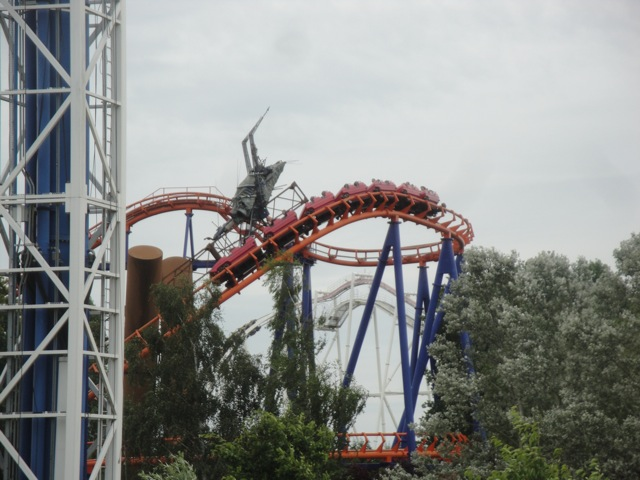
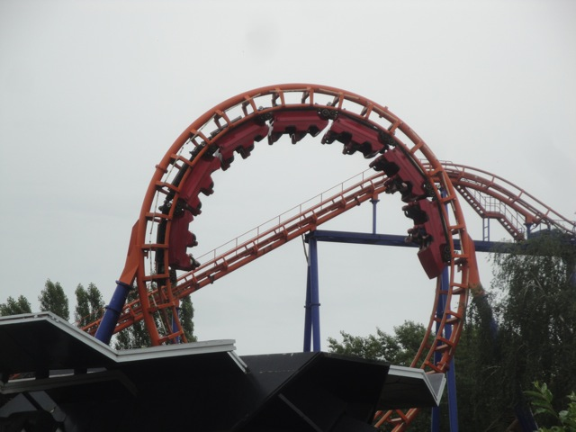

| |
Space Comet Review

We're here at Walygator Parc. Today's ride we'll be reviewing for you is Space Comet. Once you get in the cars and pull down the OTSRs, you're off. We climb up the lifthill. Not much to see. Just rural farmland. Fast foreword to the top. We're at the top, go around a slight turn and into a drop. There's some laterals here, so there's a little bit of headbanging, but it's not too bad. Not going very fast though. We soar through the vertical loop. Ok, we don't soar through it, we just sort of roll into it. It's generic. It doesn't hurt, but it doesn't thrill either. It's not even painful. Just klunky. We then head into a turn that gives us a good smack. Ouch. Brace yourselves. We then tumble through the corkscrews. They are...kind of rough. They hurt a little. But by now, you should be bracing, so it'll be over soon. And besides, it's not that bad. We head through another turn and into a downward helix. There's a little bit of rocket theming here, but all I know is that this part has headbanging and is just plain uncomfortable. Well, we rise up a small hill and into the brake run. And yeah. This is a bad ride. It's mediocre. But at the same time, it's not horrendous or anything. In fact, I think I keep forgetting that this ride exists. Seriously, Anaconda may be a million times worse, but at least it's memorably bad. But hey, it's still better to be mediocre and forgettable than horrendous and memorable. And hey, that advice translates to the real world as well. =)
4/10
Location: Walygator Parc
Opened: 1989
Built by: Vekoma
Last Ridden: June 24, 2012
Space Comet Photos

|